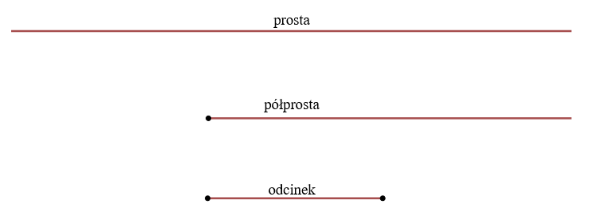
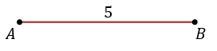
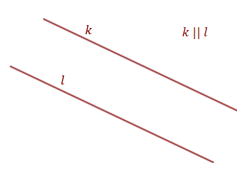
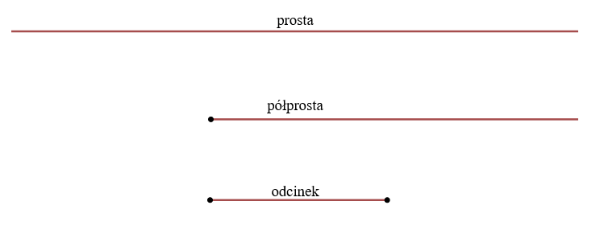
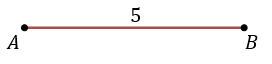
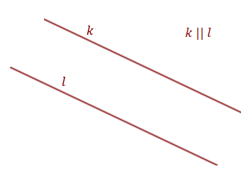

Prosta, półprosta i odcinek
Prosta - to linia prosta nieograniczona z obu
stron.
Półprosta - część prostej ograniczona z jednej strony punktem tej prostej, a z drugiej strony nieograniczona.
Odcinek - część prostej zawarta pomiędzy dwoma punktami tej prostej, z tymi punktami włącznie.  Prosta i półprosta mają nieograniczoną długość, natomiast odcinek ma długość ściśle określoną.
Długość odcinka o końcach w punktach \(A\) oraz \(B\) oznaczamy symbolem: \(|AB|\).  \[|AB|=5\] Każda prosta jest jednoznacznie wyznaczona przez \(2\) punkty.
Proste najczęściej podpisujemy małymi literami: \(k, l, m,...\)
Proste są równoległe jeżeli nie mają punktów wspólnych. Równoległość prostych \(k\) i \(l\) zapiszemy tak: \[k\parallel l\]  Proste są prostopadłe jeżeli przecinają się pod kątem prostym (\(90^\circ \)). Prostopadłość prostych \(m\) i \(n\) zapiszemy tak: \[m\perp n\]
Półprosta - część prostej ograniczona z jednej strony punktem tej prostej, a z drugiej strony nieograniczona.
Odcinek - część prostej zawarta pomiędzy dwoma punktami tej prostej, z tymi punktami włącznie.  Prosta i półprosta mają nieograniczoną długość, natomiast odcinek ma długość ściśle określoną.
Długość odcinka o końcach w punktach \(A\) oraz \(B\) oznaczamy symbolem: \(|AB|\).  \[|AB|=5\] Każda prosta jest jednoznacznie wyznaczona przez \(2\) punkty.
Proste najczęściej podpisujemy małymi literami: \(k, l, m,...\)
Proste są równoległe jeżeli nie mają punktów wspólnych. Równoległość prostych \(k\) i \(l\) zapiszemy tak: \[k\parallel l\]  Proste są prostopadłe jeżeli przecinają się pod kątem prostym (\(90^\circ \)). Prostopadłość prostych \(m\) i \(n\) zapiszemy tak: \[m\perp n\]